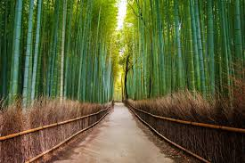
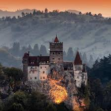

Arashiyama Bamboo Forest
Located at the foot of the “Storm Mountains” in the north of the city of Kyoto, this world-famous, seemingly endless forest of swaying bamboo boughs is perfect for a relaxing retreat to nature during a stay in Japan. The Arashiyama bamboo grove is open 24/7 and admission is free. The surrounding Arashiyama district, known for unique fishing methods which involve using trained cormorant birds, is also well worth a visit.
Read More

Transylvania, Romania
Nestled in the Carpathian Mountains of Romania, Bran Castle is often associated with the legend of Count Dracula, thanks to its striking, Gothic architecture and its eerie, fortress-like presence. This medieval stronghold, perched on a rocky hilltop, has a rich and tumultuous history that spans centuries. It was originally built in the 14th century as a military fortress, designed to protect the strategically important Transylvanian region from invading forces.
Read More

The Isle of Skye, Scotland
Located on the west coast of Scotland, The Isle of Skye is renowned for its rugged landscapes, dramatic cliffs, and rich Scottish heritage. Often referred to as the “Land of Mist,” the island offers some of the most stunning natural scenery in the United Kingdom. With its mystical atmosphere, charming villages, and ancient castles, Skye is a place that seems straight out of a fairytale.
Read More